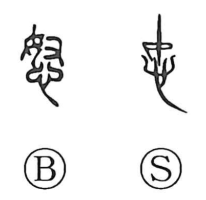

怒

Kun: ikaru, okoru, ikari | On: do, nu
anger ・ to get angry ・ rage ・ to scold
Explanation
A phono-semantic compound: the heart radical (expressing mind and feeling) is paired with 奴 as the phonetic. 奴 belongs to the same phonetic line as 努 (to exert oneself) and 弩 (a powerful crossbow), all carrying the sense of strong, vehement force and giving the on-readings do/nu. 怒 therefore depicts the heart stirred into a forceful, agitated state—anger. The Shuowen simply glosses it as “to be angry.” The vivid idiom “怒髪天を衝く,” hair bristling so fiercely it seems to pierce the heavens, preserves this sense of extreme, vehement wrath.